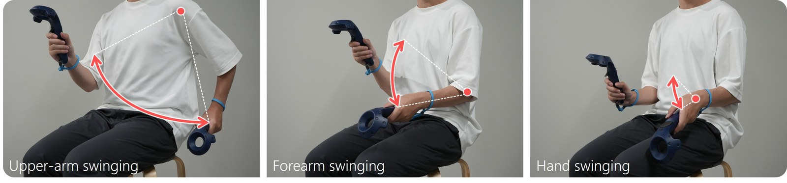

💪Primary Joint Effects in
Arm-Based Seated VR Locomotion
ACM Symposium on Virtual Reality Software and Technology (VRST) 2026

Abstract Gesture-based locomotion techniques are widely used in virtual reality, with arm-based gestures serving as a commonly used locomotion metaphor. This study systematically investigates three seated arm-based gesture modalities defined by their primary joints: the shoulder (Upper-arm Swinging; US), elbow (Forearm Swinging; FS), and wrist (Hand Swinging; HS). Through a three-part experiment, we evaluated the sense of presence and subjective workload, expected walking speeds, and physical tempo limits. Quantitative measures showed no significant differences in the sense of presence across arm-based conditions, but they revealed a difference in physical demands, with US > HS. Furthermore, we found that the expected walking speed for US was significantly higher than for FS and HS. We also identified that the maximum achievable input tempo follows the order HS > FS > US. Overall, our analysis revealed an inverse relationship where heavier gestures with lower maximum input tempos correlate with faster expected walking speeds. Similarly, we found a positive correlation between a gesture’s moment of inertia and the user’s expected walking speed, suggesting that these physical constraints may act as sensory cues related to virtual propulsion scaling. These results point to a design trade-off in which the gesture conveying the strongest sense of forward motion (US) is also the most physically demanding and the hardest to sustain.
@inproceedings{itagaki_vrst26,
author={Itagaki, Ryoma and Kitaura, Yusuke and Nakamura, Fumihiko and Kataoka, Yuta and Shibata, Fumihisa and Kimura, Asako and Mori, Shohei},
booktitle={ACM Symposium on Virtual Reality Software and Technology (VRST)},
title={Primary Joint Effects in Arm-Based Seated VR Locomotion},
year={2026},
doi={10.1145/3822517.3848701}
}